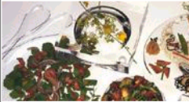
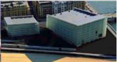
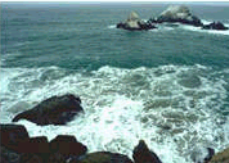

| Gastronomìa | Restaurantes |  |
|---|---|---|
| Sindrerìas y asadores | ||
| Bodegas de vino y txakoli | ||
 |
||
| Productos tìpicos | ||
| Escuelas de hostelerìa | ||
| Cultura | archivos y bibliotecas |  |
| museos | ||
| Palacio de congresos | ||
| ferias de muestras | ||
| Oscio | Entretenimiento y diversiòn |  |
| Oscio cultural | ||
| Excursiones y deporte |